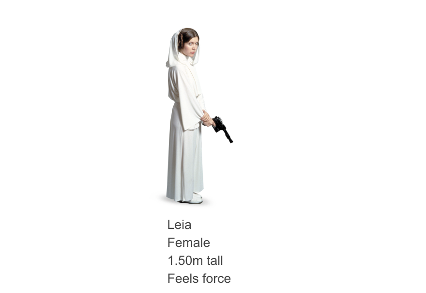
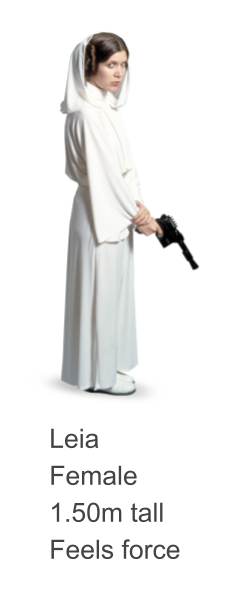
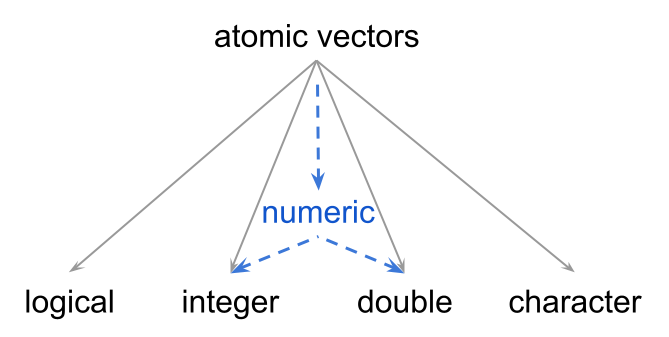

Atomic Vectors
R’s building blocks
Announcements
Office Hours / Group Tutoring
DSP accommodations ✉️
Quarto Publication 1 (Thu 1/29 in lab)
Problem Set 1 (available Thu 1/29, due Wed 2/4)
Vectors and Data Types

Leia’s data objects

Leia’s data objects
Leia’s data objects
Leia’s data objects
Data Types
BTW: All these objects are vectors.
More Data

Vectors
To create “larger” vectors we use the combine function c()
Properties of Vectors
Vectors
Central—and most basic—data structure in R
Ordered set of elements (i.e. contiguous cells)
Can be of any length (including zero)
Atomic: elements of the same type
Elements can have names
[1] "Leia" "Luke" "Han" Atomic Vectors
Vectors are atomic structures
The values in a vector must be ALL of the same type!
Either all logicals, or integers, or doubles, or characters
You CANNOT have a vector of different data types
Atomic*
Special values in an atomic vector:
NA: Not Available / MissingNULL: Does not exist (nothing)NaN: Not a Number (e.g. dividing by zero)Inf: Infinity
A comment about comments
Comment character: special character to skip evaluation of remaining characters on a line. R (and Python) use #.
[1] "A" "C" "D"R jargon: Types and Modes
You’ll often see/hear useRs talking about “modes” instead of “types”.
The function
typeof()returns the type of data: this is how the values are stored internally in R.
[1] "character"In S terminology1, instead of talking about types we talk about modes.
The function
mode()returns the “mode” of an R object.
Types and Modes

- 4 main types: logical, integer, double, character
- 3 main modes: logical, numeric, character
Your Turn
| Name | House | Spells |
|---|---|---|
| Harry | Gryffindor | 60 |
| Bellatrix | Slytherin | 75 |
| Hermione | Gryffindor | 70 |
01:00
Which command creates a valid vector Name?
Name <- (Harry, Bellatrix, Hermione)Name <- c(Harry, Bellatrix, Hermione)Name -> c("Harry", "Bellatrix", "Hermione")Name <- c("Harry", "Bellatrix", "Hermione")
| Name | House | Spells |
|---|---|---|
| Harry | Gryffindor | 60 |
| Bellatrix | Slytherin | 75 |
| Hermione | Gryffindor | 70 |
01:30
What is the data type of the following vectors?
spells1 <- c(60, 75, 70)spells2 <- c(60.0, 75.0, 70.0)spells3 <- c(60L, 75L, 70L)spells4 <- c("60", "75", "70")
01:30
Consider the following vectors:
HH <- c("Harry", "Hermione")Spells <- c(60, 75, 70)
What is the length of the following vectors?
v1 <- c(HH, "Ron")v2 <- c(HH, c("Ron", "Luna"))v3 <- c(Spells, Spells)v4 <- c(Spells, NULL)
Creating Vectors
Functions to create vectors
R has a large repertoire of functions to create a variety of vectors.
We’ve already seen the combine function c().
Functions to initialize “dummy” vectors:
logical(length = )integer(length = )double(length = )character(length = )vector(mode = , length = )
Functions to initialize “dummy” vectors
[1] FALSE FALSEWe typically create these vectors to have an output object whose elements will be populated or updated in later computations.
Functions to create vectors: vector()
Numeric Sequences with seq()
seq() allows you create numeric sequences of different kinds, for example:
Numeric Sequences with :
The colon operator : also lets you create simple sequences
The output sequence is produced in 1-unit steps.
Replicates with rep()
rep() replicates the values of the input vector in a handful of different ways: